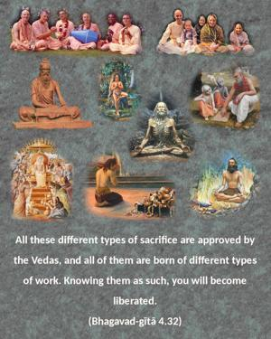
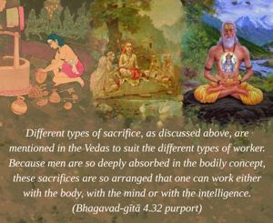

All these different types of sacrifice are approved by the Vedas, and all of them are born of different types of work. Knowing them as such, you will become liberated.


Different types of sacrifice, as discussed above, are mentioned in the Vedas to suit the different types of worker. Because men are so deeply absorbed in the bodily concept, these sacrifices are so arranged that one can work either with the body, with the mind or with the intelligence. But all of them are recommended for ultimately bringing about liberation from the body. This is confirmed by the Lord herewith from His own mouth.